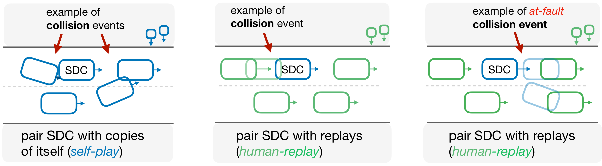
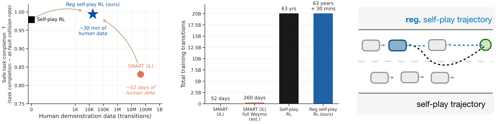
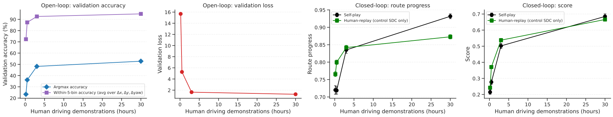
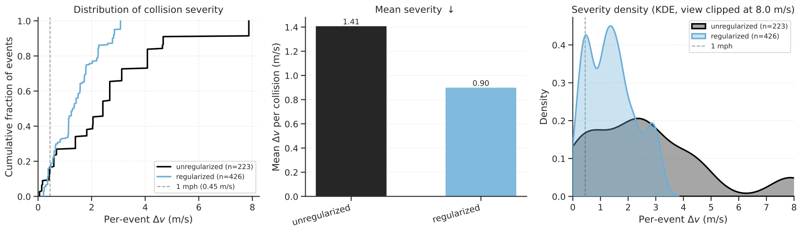

Spiced · human-replay
1 / 2
Waiting for a pedestrian
The spiced policy completes the scenario while yielding an interaction that is more readily anticipated.
Manuscript · 2026
1NYU Tandon School of Engineering · 2NYU Courant · 3Princeton University · 4Centre for Robotics, Mines Paris · 5Valeo
Spiced self-play combines over 60 years of simulated self-play with 30 minutes of human driving data as a behavioral anchor, improving coordination with logged human trajectories without reward engineering or domain randomization.
Rollouts
Each rollout is a held-out human-replay scenario: only the blue ego vehicle is controlled by the learned policy, while green vehicles replay recorded human trajectories. The agent is goal-conditioned on the target destination; when the ego vehicle collides, it is colored red. Use the arrows in each card to switch examples.
Spiced · human-replay
The spiced policy completes the scenario while yielding an interaction that is more readily anticipated.
Spiced · rollout
Spiced self-play remains task-effective while staying close to behavior induced by the human-data anchor.


Unregularized · atypical
An unregularized policy can complete the scenario using maneuvers that are less consistent with logged human behavior.

Unregularized · transfer
Without the human-data anchor, self-play may converge to behaviors that transfer poorly to human-replay evaluation.


Spiced · failure
Human-replay remains an imperfect proxy for deployment, and some interactions remain unresolved.
Demonstration replay
Expert SDC replays illustrate the demonstrations used to fit the behavioral anchor.
Summary
Self-play RL can scale through simulated experience, but policies trained only against themselves may adopt effective driving conventions that do not coordinate with human drivers. Spiced self-play keeps self-play as the main training engine and adds a small behavioral cloning anchor from human driving data.
With 30 minutes of Waymo human driving data and 20B self-play transitions, spiced policies reach 0.994 safe task completion under human replay, outperforming both unregularized self-play and SMART-tiny CLSFT while avoiding reward engineering and domain randomization.
PPO training uses a minimal safe-goal-reaching reward, while the behavioral anchor keeps updates close to conventions observed in a small human dataset.
Held-out scenes replay logged human agents while the learned policy controls the ego vehicle, exposing coordination failures that self-play evaluation can miss.
The experiments vary map diversity and human driving data from minutes to full-dataset references to measure when coordination emerges.
Evaluation

Results



Abstract
Self-play reinforcement learning can substitute cheap, large-scale simulation for large human driving datasets, but policies trained only through self-play can converge to effective yet incompatible driving conventions. Prior work often addresses this through reward engineering and domain randomization.
We introduce spiced self-play: policies trained with a minimal safe-goal-reaching reward, over 60 years of self-play simulation, and 30 minutes of human driving data as a behavioral anchor. The resulting policies coordinate with logged human trajectories using 2,500× less human data than imitation-learning baselines, and the full pipeline runs in 15 hours on a single consumer-grade GPU.
Citation
@unpublished{cornelisse2026humanlikeautonomy,
title = {Human-like autonomy emerges from self-play and a pinch of human data},
author = {Cornelisse, Daphne and Hunt, Julian and Zhang, Zixu and Doulazmi, Wa{\"e}l and Joseph, Kevin and {Fern{\'a}ndez Fisac}, Jaime and Vinitsky, Eugene},
year = {2026},
month = may,
note = {Manuscript}
}